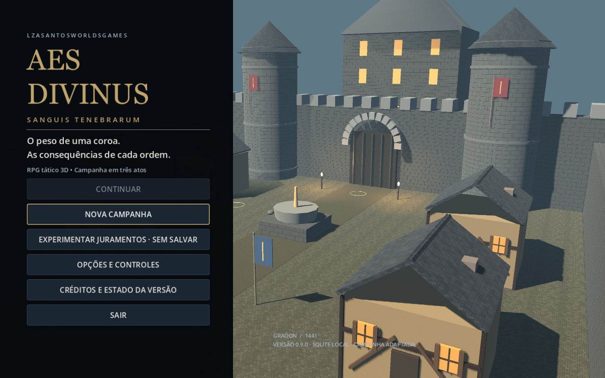

01 / Observe
Escolha o juramento e a testemunha. Leia o objetivo, a fila de iniciativa e as intenções inimigas antes de agir.
LZASANTOSWORLDSGAMES APRESENTA
RPG TÁTICO · FANTASIA MEDIEVAL
Reconstrua Gradon depois de uma derrota que ninguém esqueceu. Comande sua companhia, enfrente a corrupção e descubra o preço de uma promessa.
Versão em desenvolvimento 0.15.0 · Windows x64

SUA PRIMEIRA ORDEM / JOGUE NO NAVEGADOR
Comande seis aliados contra os guardiões de um totem. Escolha um juramento, experimente as seis ações e descubra como sua testemunha reage ao resultado. O combate usa o sistema do jogo.
PRIMEIRAS ORDENS
Encontro isolado · aproximadamente 38 MB no primeiro carregamento · computador recomendado.
WebGL 2 e WebAssembly necessários. A partida é temporária e não salva progresso.
O jogo só é carregado quando você clicar em iniciar.
Escolha o juramento e a testemunha. Leia o objetivo, a fila de iniciativa e as intenções inimigas antes de agir.
Selecione a ação e um alvo válido. Teclas 1–6 ou botões: atacar, defender, habilidade, bandagem, inspirar e reposicionar. Esc pausa.
Proteja feridos, inspire para reduzir medo e use a formação. Após o resultado, reinicie e compare outro juramento.
Recorte de combate da versão em desenvolvimento. A campanha Windows inclui exploração, diálogos e reconstrução. Fechar ou reiniciar descarta o ensaio; ele não modifica seus salvamentos Windows.
William de Augusto partiu para Wood querendo provar que merecia a coroa. Voltou com a invasão às portas de Gradon e a confiança dos seus aliados em ruínas.
Ao lado de Elric, Ethan, Albert e Donovan, recupere vilas, cuide dos feridos e prepare uma companhia capaz de enfrentar criaturas sustentadas pela corrupção angelical.
Bravo, Sábio ou Diplomata: três caminhos de personalidade. Os mesmos homens terão de viver com suas ordens.
02 / JURAMENTOS E TESTEMUNHAS
Antes de lutar, dê sua palavra diante de um companheiro. O compromisso muda sua tática — e será julgado pelo que aconteceu no campo.
IUSDICTA / AMPARO
“Desta vez, sua palavra chegou ao campo conosco. É assim que quero lutar ao seu lado.”
ETHAN ARMAND / TESTEMUNHA
Confiança +6 · influência +3 · memória de coragem +1.
Exemplo interativo do sistema. No jogo, você escolhe a testemunha disponível e o resultado depende da batalha. A última memória de cada companheiro substitui a anterior.
03 / DENTRO DO JOGO
Intenções inimigas visíveis, formação em duas linhas e consequências que acompanham sua companhia. Capturas reais, sem imagens conceituais apresentadas como gameplay.
ENTRE UMA MISSÃO E OUTRA
Reconstrua a ferraria. Treine no quartel. Trate os feridos no monastério. Escolha quem acompanha suas promessas.
A reconstrução também faz parte da estratégia.04 / ENTRE EM GRADON
Baixe a versão jogável para Windows. Uma campanha adaptada em desenvolvimento, com narrativa, arte e sistemas ainda em evolução.
Novidades 0.15: escolha os convidados da taverna, acompanhe vínculos, recupere excessos no monastério e reconstrua relações de confiança. Inclui as cenas com vozes gravadas, palco 3D e armas Aes individuais. Atualização em desenvolvimento, com limitações documentadas.
Baixar para WindowsVersão 0.15.0 · aproximadamente 40 MB · arquivo ZIP
Notas da versão e verificação do arquivo ↗Compare o hash do ZIP com o arquivo SHA256SUMS publicado na versão. O executável ainda não tem assinatura digital.
Consulte SHA256SUMS_0.15.txt na página da versão.Requisitos técnicos de compatibilidade. Desempenho em outros computadores ainda precisa de homologação. Há modo leve e perfis gráficos.
COMO COMEÇAR
Escolha uma pasta. Preserve juntos o executável, o arquivo PCK e a DLL incluída.
Godot, Python, .NET e servidor de banco não precisam ser instalados para jogar.
Comece uma campanha ou use “Experimentar juramentos · sem salvar” para testar o sistema preservando seu progresso.
ANTES DE PARTIR
Sim. A demonstração em Jogar no navegador permite testar um combate com juramentos. Ela é temporária e não salva progresso. A campanha com exploração, narrativa e reconstrução está no pacote Windows. Consulte o guia completo.
É uma versão jogável de avaliação. A campanha possui prólogo e três atos adaptados; modelos, animações, diálogos, sistemas e balanceamento continuam em desenvolvimento. Juramentos e suas novas falas são adaptações para o jogo.
O jogo não exige cadastro. Seus salvamentos ficam no computador. O site não adiciona analytics, publicidade ou rastreadores. O GitHub fornece a hospedagem e os downloads.
As novas versões e os arquivos de verificação ficam na página de versões do jogo. Leia as notas antes de substituir uma versão anterior e preserve uma cópia do seu salvamento.